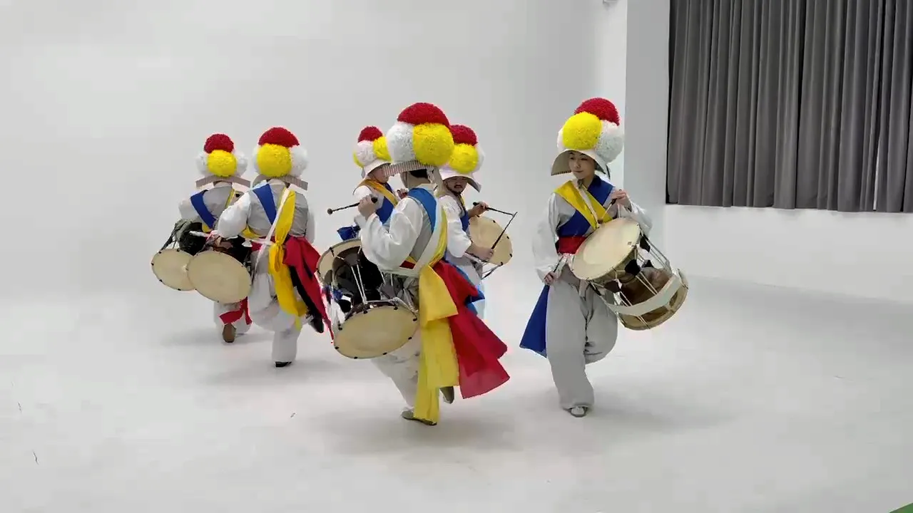
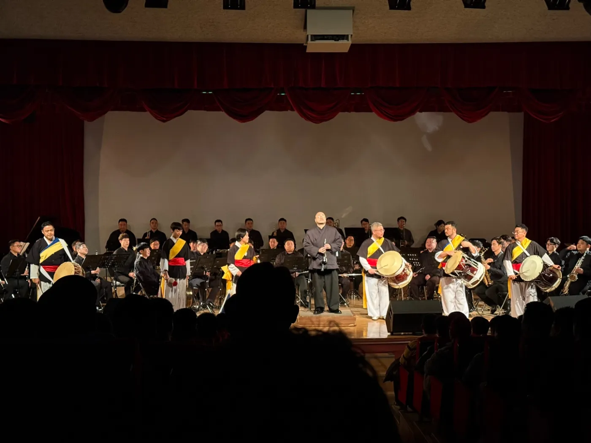
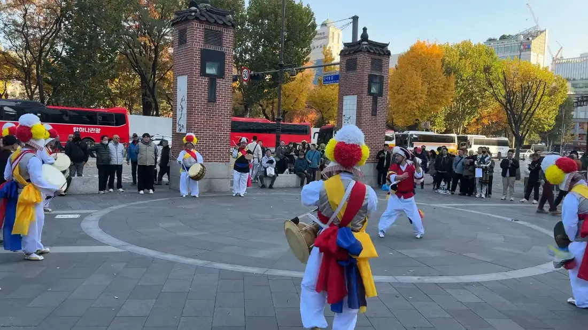
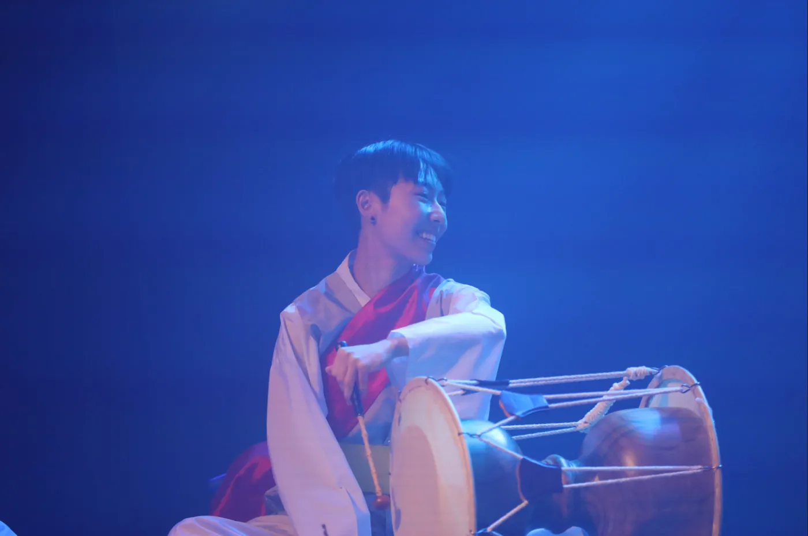
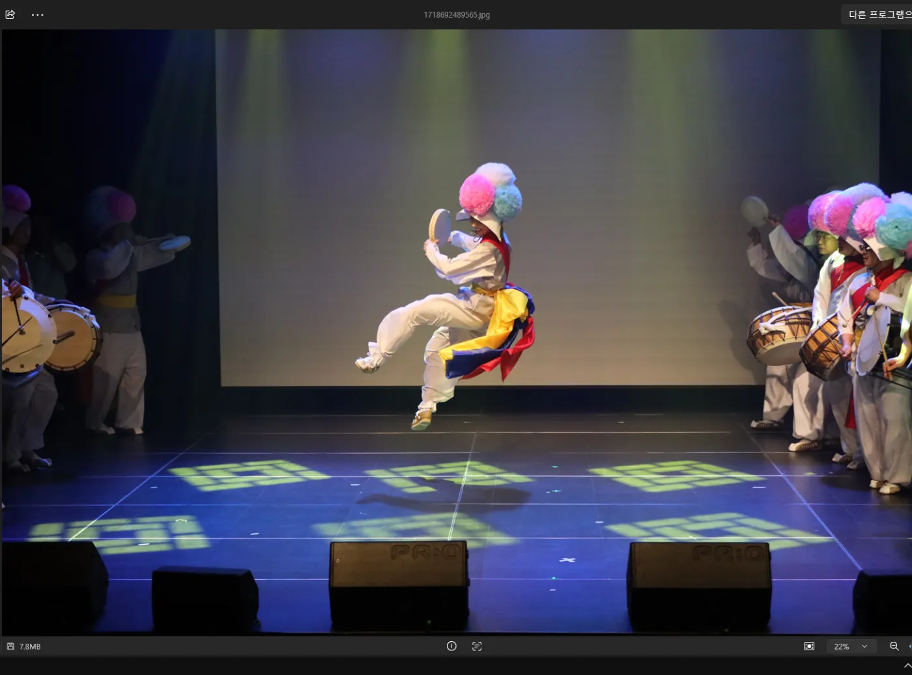

Music, movement, and community
Pungmul (풍물)
I play pungmul with a queer ensemble in South Korea. Learning the rhythms has led me to read about the many settings in which this music has been performed, from village gatherings to theatres and public demonstrations. I find myself paying more attention to the histories behind what we play.

Performances with our ensemble
Our ensemble gave a formal concert in 2024 and has performed at Seoul Pride and smaller events supporting queer rights. The photographs show moments from rehearsal, a stage performance, and outdoor gatherings.




Performance and rehearsal photographs from my personal collection.
The instruments and their rhythms
Pungmul centres on percussion, although performances may also involve dancing, processions, and dramatic characters. The related term nongak (농악) is widely used in heritage descriptions, while local traditions have their own names and practices (National Institute of Korean History, n.d.).
The instruments have different roles within the ensemble. The small gong, kkwaenggwari (꽹과리), often carries leading cues, while the large jing (징) sounds across longer intervals. The hourglass-shaped janggu (장구) and barrel-shaped buk (북) support interlocking rhythmic patterns. Depending on the tradition and setting, additional instruments and dancers may join the group. The rhythms are closely tied to their movements and changing formations.
A tradition with many histories
Accounts of nongak describe music associated with agricultural work, village rites, seasonal celebrations, and gatherings that raised funds for communal needs. These occasions involved participation by neighbours as well as performers. Regional traditions differ in their rhythms, instruments, formations, and costumes, as described in UNESCO's 2014 heritage record for nongak (UNESCO, 2014).
The settings have continued to change. Village performance traditions have developed alongside travelling troupes and staged productions. In February 1978, samulnori emerged in a small theatre, with four musicians performing rearranged nongak rhythms while seated. Its early form differed from the standing ensembles and processions often associated with nongak (National Folk Museum of Korea, n.d.). The development opened another way of presenting related music, while regional practices continued to be performed and taught (National Institute of Korean History, n.d.).
Pungmul and social movements
Pungmul also has a history within South Korea's struggles for democracy. During the 1980s, some university performers drew on the forms of village rituals to respond to political concerns, informed by their experiences in labour and farmers' movements. Their performances brought these traditions into new settings. Park's analysis also raises questions about how these staged works related to the everyday communal practices of village ritual (Park, 2014).
References
- National Folk Museum of Korea. (n.d.). Samulnori (opens in a new tab). Encyclopedia of Korean Folk Culture.
- National Institute of Korean History. (n.d.). Nongak, or farmers' music (opens in a new tab) [Documentary and historical overview].
- Park, H.-J. (2014). 1980년대 전반기 서울지역의 풍물운동계열 작품에 나타난 굿성 연구－1980~1987년 6월항쟁 사이의 작품을 중심으로－ (opens in a new tab) [Study of gut characteristics in Seoul's pungmul movement performances, 1980–1987]. 실천민속학 연구, 23, 115–163.
- UNESCO. (2014). Nongak, community band music, dance and rituals in the Republic of Korea (opens in a new tab). Watch the heritage film (opens in a new tab).